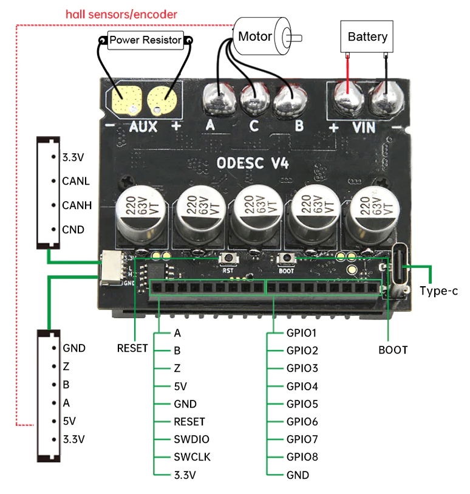
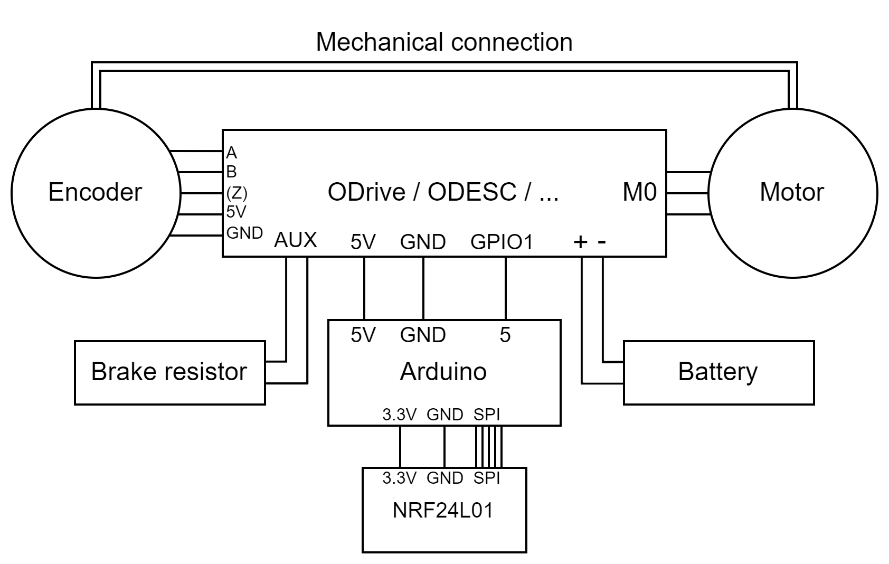

This is the guide that is used in this video to make a DIY cable cam with ODrive / ODESC / ... :
If you have not worked with ODrive / ODESC / ... before, I recommend following my getting started guide.
Configure the basic settings shown in the getting started guide.
odrv0.axis0.encoder.config.cpr = odrv0.axis0.motor.config.pole_pairs = odrv0.axis0.motor.config.current_lim = odrv0.axis0.controller.config.vel_limit = If you are using the latest firmware version.
odrv0.config.enable_brake_resistor = TrueBecause this project uses a battery, you can also use regenerative braking.
If you don't have the motor calibration saved using motor.config.pre_calibrated, you have to calibrate at startup.
odrv0.axis0.config.startup_motor_calibration = Trueodrv0.axis0.config.startup_encoder_offset_calibration = Trueodrv0.axis0.config.startup_closed_loop_control = Trueodrv0.save_configuration()odrv0.reboot()There are a number of options to get this thing working, if you want basic control, you can use velocity control in combination with an RC PWM input signal.
odrv0.axis0.controller.config.control_mode = CONTROL_MODE_VELOCITY_CONTROLSet the RC PWM input mode to velocity.
odrv0.config.gpio1_pwm_mapping.endpoint = odrv0.axis0.controller._input_vel_propertyIf you are using the latest firmware version.
odrv0.config.gpio1_mode = GPIO_MODE_PWMYou can tune the neutral position on your RC transmitter or you can make the min and max not inversely equal (for example use -15.2 and 15).
odrv0.config.gpio1_pwm_mapping.min = -15odrv0.config.gpio1_pwm_mapping.max = 15odrv0.save_configuration()odrv0.reboot()Another option is to use position control in combination with an RC PWM input signal (with a linear potentiometer for example).
odrv0.axis0.controller.config.control_mode = CONTROL_MODE_POSITION_CONTROLSet the RC PWM input mode to position.
odrv0.config.gpio1_pwm_mapping.endpoint = odrv0.axis0.controller._input_pos_propertyIf you are using the latest firmware version.
odrv0.config.gpio1_mode = GPIO_MODE_PWModrv0.config.gpio1_pwm_mapping.min = -25odrv0.config.gpio1_pwm_mapping.max = 25The position where the motor starts is the zero position, you could also use an endstop to set a new zero position by using homing.
odrv0.save_configuration()odrv0.reboot()If you want more options, such as motion planning, you can use the ODriveArduino library.
If you don't have an RC transmitter and receiver, you can use two Arduinos in combaniation with NRF24L01s and a joystick instead.
The servo library generates an RC PWM signal you can use as in input, you can download my code here.
There is a small mistake in the schematic, make sure to use the written pin numbers because pin 13 is not correct in the schematic.
For this project I used a single axis ODESC.
These are the general schematics for the Arduino and RC receiver versions, make sure you have a common ground.
There are a few GPIO pins you can use for the RC PWM input, you can find the pinout here.
You can also use an ODrive or a dual axis ODESC. When using a dual axis board, you could also have 2 spools of wire and depending on the motor rotation directions, the system can move horizontally and/or vertically.